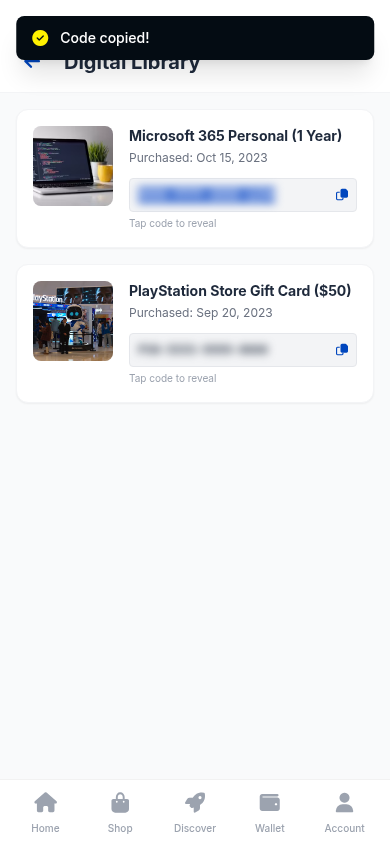

01 Independent execution verified
STEERDISTILL / DIGITAL WORLD DEMOS
从文字纠错，
到独立行动。
当智能体在界面里走错一步，
教师的一句指导，能怎样改变接下来的行动？
看两个真实案例 2 个任务 · 4 段执行片段
A correction in words.
✓
An action by the student.一个更准确的动作。教师文字指导 → W4 学生自行执行
01看见失败
保留原始学生轨迹中的关键错误。
02通过文字纠错
回到相同出错前状态，让学生重试。
03独立执行验证
训练后关闭教师，从原初始状态开始。
TWO STORIES, REAL ACTIONS
小小的操作，
清晰的决策转折。
打开每个案例，沿着失败、指导与重试阅读；再播放训练后的无教师执行片段。
02 Independent execution verified

THE SETUP
同一个任务。
看清每个动作为什么发生。
Qwen3-VL-8B-Instruct 的 W4 学生，在 ScaleWoB 的 BestBuy 环境中操作。页面只呈现关键证据和必要解释，让方法本身清楚可见。
这里呈现参与训练的具体任务，不作为独立测试集或整体性能提升的证明。